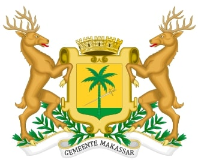
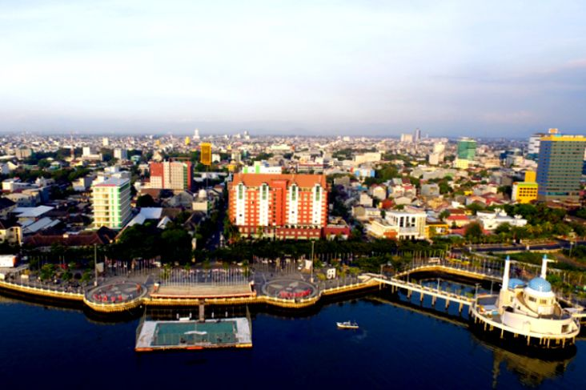
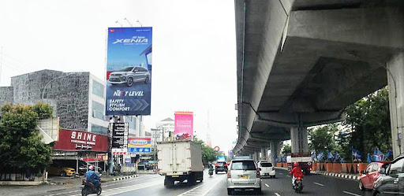
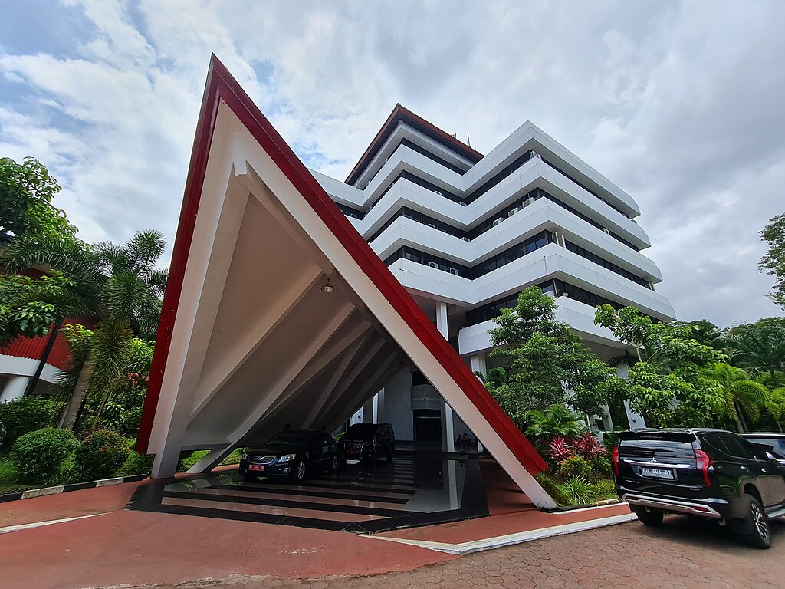

Sejarah

Raja Gowa ke-9 Tumaparisi Kallonna (1510-1546) diperkirakan adalah
tokoh pertama yang benar-benar mengembangkan kota Makassar. Ia
memindahkan pusat kerajaan dari pedalaman ke tepi pantai, mendirikan
benteng di muara Sungai Jeneberang, serta mengangkat seorang
syahbandar untuk mengatur perdagangan.Pada abad ke-16 hingga abad
ke-17, Makassar menjadi pusat perdagangan yang dominan di Indonesia
Timur, sekaligus menjadi salah satu kota terbesar di Asia Tenggara.
Raja-raja Makassar menerapkan kebijakan perdagangan bebas yang
ketat, di mana seluruh pengunjung ke Makassar berhak melakukan
perniagaan di sana dan menolak upaya VOC (Belanda) untuk memperoleh
hak monopoli di kota tersebut. Menurut catatan sejarah, cikal bakal
lahirnya Kota Makassar berawal dari 1 April 1906. Saat itu
pemerintah Hindia Belanda membentuk dewan pemerintahan Gemeentee di
Kampung Baru, yang terletak di kawasan Pantai Losari dan Benteng
Fort Rotterdam. Kawasan ini yang berkembang menjadi kota Makassar
hingga kini disebut hari kebudayaan makassar, sebelumnya merupakan
hari jadi Kotamadya Ujung Pandang. nama Makassar sendiri sempat
diganti menjadi Ujung Pandang di masa pemerintahan Orde Baru,
tepatnya pada 31 Agustus 1971. Meski begitu, sebutan Ujung Pandang
sudah dikenal sejak tahun 1950-an.
Geografis

Makassar adalah ibu kota provinsi Sulawesi Selatan, yang terletak di
bagian Selatan Pulau Sulawesi yang dahulu disebut Ujung Pandang,
terletak antara 119º24’17’38” Bujur Timur dan 5º8’6’19” Lintang
Selatan yang berbatasan sebelah Utara dengan Kabupaten Maros dan
Kabupaten Pangkajene dan Kepulauan (Kecamatan Liukang Tupabiring),
sebelah Timur Kabupaten Maros (Kecamatan Mocongloe) dan Kabupaten
Gowa (Kecamatan Pattallassang), sebelah selatan Kabupaten Gowa
(Kecamatan Somba Opu dan Barombong) dan Kabupaten Takalar (Kecamatan
Galesong Utara), serta sebelah Barat dengan Selat Makassar. Kota
Makassar memiliki topografi dengan kemiringan lahan 0-2°(datar) dan
kemiringan lahan 3-15° (bergelombang). Luas Wilayah Kota Makassar
tercatat 175,77 km persegi.Kota Makassar adalah kota yang terletak
dekat dengan pantai yang membentang sepanjang koridor barat dan
utara dan juga dikenal sebagai “Waterfront City” yang di dalamnya
mengalir beberapa sungai seperti Sungai Tallo, Sungai Jeneberang,
dan Sungai Pampang yang kesemuanya bermuara ke dalam kota. Kota
Makassar merupakan hamparan daratan rendah yang berada pada
ketinggian antara 0-25 meter dari permukaan laut.
Ekonomi

Laju pertumbuhan ekonomi Kota Makassar berada di peringkat paling
tinggi di Indonesia. Dalam lima tahun terakhir, rata-rata
pertumbuhan ekonomi Kota Makassar di atas 9%. Bahkan pada tahun
2008, pertumbuhan ekonomi Kota Makassar mencapai angka 10,83%.
Pesatnya pertumbuhan ekonomi saat itu, bersamaan dengan gencarnya
pembangunan infrastruktur yang mendorong perputaran ekonomi, seperti
pembangunan Bandara Internasional Sultan Hasanuddin, jalan tol dan
sarana bermain kelas dunia Trans Studio di Kawasan Kota Mandiri
Tanjung Bunga.Pada triwulan II tahun 2019 saja, Makassar mendapatkan
Penanaman Modal Dalam Negeri (PMDN) dan Penanaman Modal Asing (PMA)
masing-masing sebesar Rp601,1 Miliar dan Rp 1 Trilliun. Penanaman
Modal ini diserap 5 sektor yaitu sektor pertambangan dengan nilai
paling besar yaitu Rp484,3 Miliar diikuti oleh sektor industri
mineral non logal sebesar Rp377,1 Miliar, jasa lainnya sebesar
Rp169,2 Miliar, sektor listrik, gas & air sebesar Rp164,7 Miliar dan
sektor industri makanan sebesar Rp100,7 Miliar.Selain investasi yang
relatif besar, Makassar juga berhasil menciptakan usaha-usaha yang
mengharumkan nama bangsa seperti PT CEPAT DAN BERSIH INDONESIA (QnC
Laundry) yang berhasil membawa nama Indonesia ke panggung
internasional melalui sebuah kompetisi laundry internasional di
Milan pada tahun 2018 yang diadakan CINET, sebuah komite
internasional untuk pemeliharaan tekstil. Ada juga produk terkenal
dari Makassar yang banyak orang tidak tahu berasal dari Makassar
yaitu Minyak Tawon yang bisa dijadikan minyak gosok, pijat dan urut.
Minyak tawon ini dapat ditemukan di pusat oleh-oleh seperti Jalan
Somba Opu. Ada juga Bugis Waterpark yang telah buka sejak tahun 2012
dan Jamesons Hardware Supermarket yang sudah menjamur ke seluruh
Indonesia juga berasal dari Makassar.
Pendidikan

Data Badan Pusat Statistik Makassar mencatat jumlah Sekolah Dasar di
kota ini sebanyak 473, kemudian jenjang Sekolah Menengah Pertama
sebanyak 225, dan Sekolah Menengah Atas sederajat sebanyak 134.
Sementara, Angka Partisipasi Murni (APM) siswa setiap jenjang pada
tahun 2022, tingkat SD sebanyak 99,62%, tingkat SMP sebanyak
83,05%,dan tingkat SMA sebanyak 59,64%, jumlah partisipasi SMA
menurun dibanding tahun 2021, yakni 60%. Untuk jenjang perguruan
tinggi, beberapa diantaranya yakni: Universitas Hasanuddin,
Universitas Negeri Makassar, Universitas Islam Negeri Alauddin
Makassar, Universitas Muhammadiyah Makassar, Universitas Muslim
Indonesia, Universitas Fajar, Universitas Cokroaminoto, Universitas
Atma Jaya Makassar, Universitas Kristen Indonesia Paulus,
Universitas Bosowa Makassar, Universitas Pancasakti, Universitas
Islam Makassar, Politeknik Ilmu Pelayaran Makassar, Politeknik
Kesehatan Makassar, Politeknik Negeri Ujung Pandang, Politeknik ATI
Makassar, STKIP YPUP Makassar, Universitas Patria Artha, Universitas
Pejuang Republik Indonesia, Universitas Sawerigading, Universitas
Indonesia Timur Makassar, Universitas Teknologi Sulawesi,
Universitas Karya Dharma, Universitas Pepabri, Universitas Terbuka
Makassar dan lainnya.